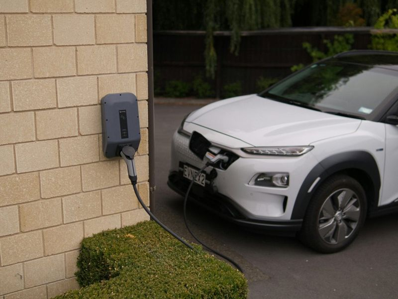
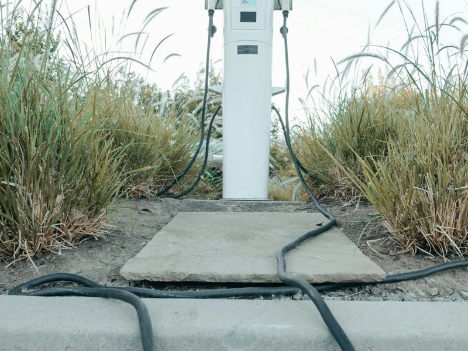
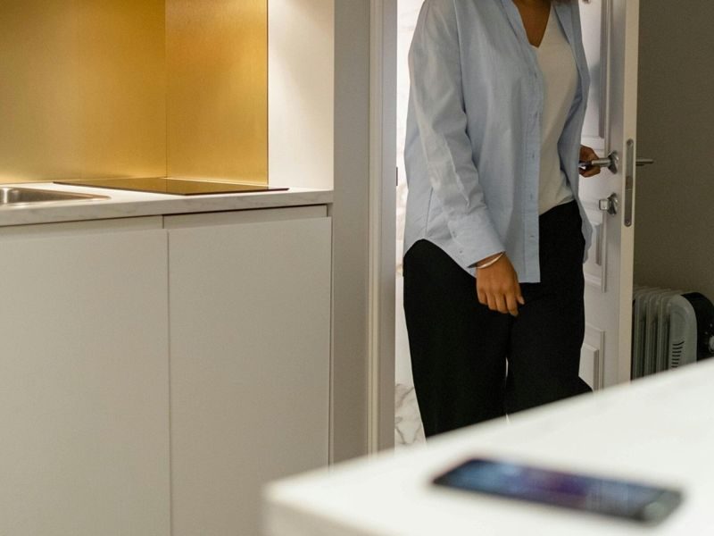

Particulier: kijk bij je gemeente
Voor een laadpaal bij je woning is er in 2026 geen landelijke aankoopsubsidie. Wel hebben ruim 120 gemeenten een eigen regeling, voor een laadpunt of voor verduurzaming waar een laadpaal onder valt. Zo'n regeling is vaak een vast bedrag of een percentage met een maximum per woning, en meestal gekoppeld aan een erkende installateur en installatie volgens NEN 1010.
Let op de volgorde: sommige gemeenten willen dat je vooraf aanvraagt, andere werken met een declaratie op de factuur. Check het dus voordat je tekent.
De meeste winst zit voor particulieren overigens niet in subsidie maar in het verbruik: thuis laden kost doorgaans € 0,25 tot € 0,35 per kWh, een openbare lader vaak € 0,55 tot € 0,89. Meer daarover op deze uitlegpagina.
Bedrijven: SPRILA
De Subsidieregeling private laadinfrastructuur bij bedrijven (SPRILA) is in 2026 de belangrijkste regeling voor laadpunten bij bedrijven. Mkb-ondernemingen krijgen het dubbele van grote bedrijven. Bedragen, voorwaarden en een rekenvoorbeeld.
VvE: SVVE

Gedeelde infrastructuur
De SVVE-regeling vergoedt een deel van de gemeenschappelijke laadinfrastructuur: bekabeling, verdeelkast en lastmanagement, tot 30%.
SVVE bij RVO
Wie betaalt wat?
Meestal betaalt de VvE de gedeelde basis en betaalt elke bewoner zijn eigen laadpaal en verbruik.
Laadpalen voor een VvE
Thuisbatterij
Landelijk is er in 2026 geen vaste subsidie op een thuisbatterij; sommige gemeenten hebben wel een regeling.
Subsidie thuisbatterijOf de VvE moet instemmen, hangt af van de splitsingsakte en het huishoudelijk reglement. Laat dat toetsen door je VvE-beheerder of notaris.
Veelgestelde vragen
Kan ik subsidie aanvragen nadat de laadpaal er hangt?
Bij SPRILA onder € 25.000 subsidie: ja, binnen 13 weken nadat het werk klaar is. Boven € 25.000 vraag je juist vóór de investering aan. Bij gemeenten verschilt het per regeling.
Is er subsidie op een laadpaal voor een leaseauto?
Vraag je werkgever of leasemaatschappij of zij de laadpaal of de laadkosten thuis vergoeden. Voor een kloppende terugbetaling is een laadpaal met MID-meter handig.